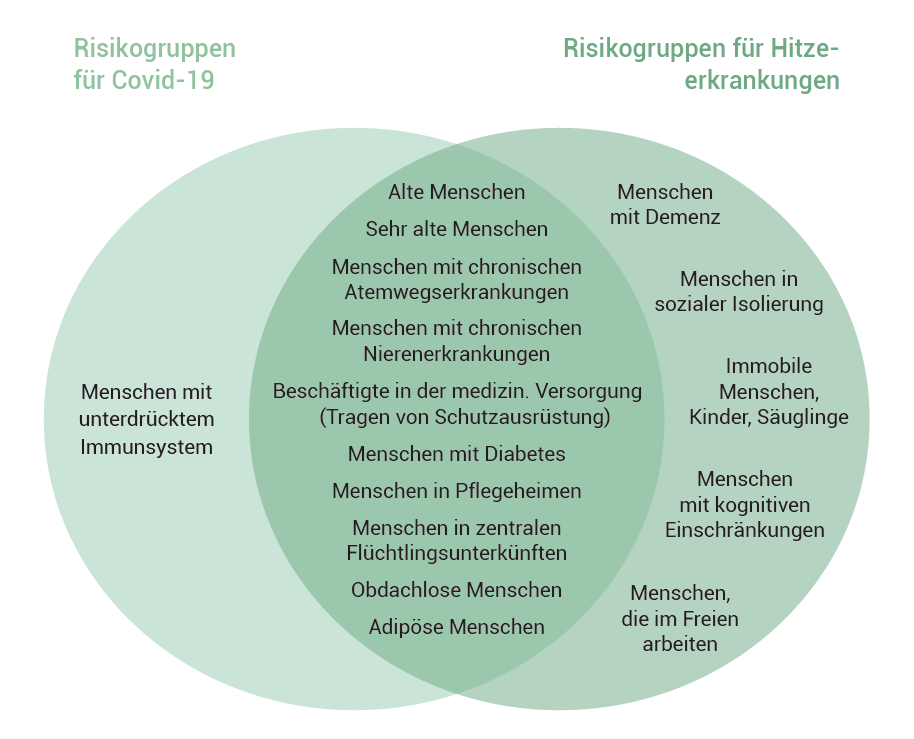

Ältere (65+) und vor allem sehr alte Menschen (80+), sowie Menschen mit schweren Grunderkrankungen sind besonders gefährdet für Covid‑19.
Ebenso sind diese Risikogruppen auch besonders für Hitzestress gefährdet.
Der Schutz der Gesundheit während Hitze widerspricht in Teilen den Maßnahmen zum Schutz vor einer Infektion. Häufig wird als Infektionsschutz körperliche Distanz empfohlen. Während Hitzeereignissen benötigen Sie jedoch soziale Unterstützung, beispielsweise um die Wohnung kühl zu halten, angemessene Kleidung auszuwählen oder ausreichend zu trinken.
Deshalb unsere Empfehlung:
Körperliche Distanz, aber soziale Nähe